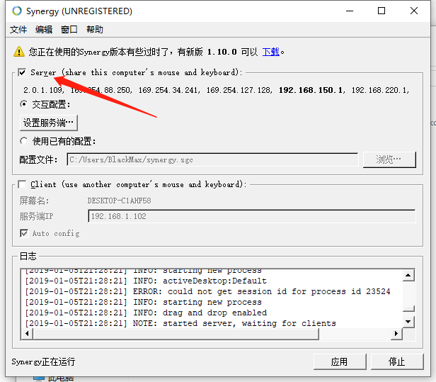

鼠键共享软件synergy
因为平时开着两台电脑，一台Windows，一台Ubuntu，桌上放两套鼠键就感觉很麻烦，于是想找找有没有能共享鼠键的软件，网上搜了一圈都比较推荐Synergy这个，于是就下载来用用。这个软件之前是免费软件，后面成为收费软件了，为了先体验一下，我就下载了免费版版本，我下载的是1.8.8，好像有1.10可以下载，我还没测试。我是在sourceforge下载的。
这个软件也是服务端-客户端架构，你可以用设置一台电脑为服务端，然后控制多台客户端。
配置客户端
建议现在客户端打开软件，如图，
在Client打钩，这步先关注这个Screen name，这个就是客户端的名称了，等会要在服务端那头填写。Server IP就是你服务端的IP，注意，这里要保证 客户端和服务端之间能ping通。
配置服务端
服务端要设置的地方比客户端多一些，首先勾选Server。

然后点设置服务端，从右上角拖动一个屏幕到你主机的相对位置，并且命名成为你客户端的名称，注意名称要相同。（服务端那里写了一排IP，但都不太正确，还是以自己的IP为准，填到客户端的配置窗口里，最好保证IP不会变动，不然每次要再填一次很麻烦）
然后点击开始，正常情况日志窗口会显示xxxx Connected的log，就证明连接成功了，然后移动鼠标，超出主机屏幕就会自动切换到客户端的屏幕里了。
体验
我用了一个多星期吧，感觉确实方便，但同时还是有一点不足的，我这个版本不支持文件和剪切板的共享，没有办法迅速从主机复制东西到客户机，不知道现在付费版有没有更新这个功能。关于Bug方面，我基本没有遇到过bug，但我同学碰到过一次切不会来的情况。不过因为是网络传输，肯定比起直接插鼠标有一点延迟，但网络情况好的状况下基本没有明显差距，总体来说这个软件不错，要是付费版支持共享剪切板和文件的话，可以考虑升级到付费版。